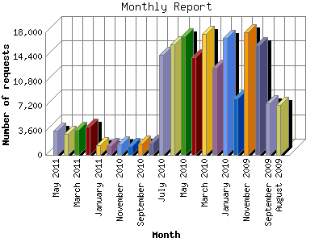

The Monthly Report identifies activity for each month in the report
time frame. Remember that each page hit can result in several server requests
as the images for each page are loaded.
Note: Depending on the
report time frame, the first and last months may not represent a complete
month's worth of data, resulting in lower hits.

| Month | Number of requests | Number of page requests | |
|---|---|---|---|
| 1. | August 2009 | 7,383 | 1,271 |
| 2. | September 2009 | 7,621 | 1,221 |
| 3. | October 2009 | 16,142 | 3,377 |
| 4. | November 2009 | 17,970 | 4,163 |
| 5. | December 2009 | 8,311 | 3,763 |
| 6. | January 2010 | 17,216 | 6,290 |
| 7. | February 2010 | 12,768 | 5,988 |
| 8. | March 2010 | 17,747 | 6,662 |
| 9. | April 2010 | 14,272 | 7,998 |
| 10. | May 2010 | 17,443 | 8,134 |
| 11. | June 2010 | 16,199 | 8,617 |
| 12. | July 2010 | 14,701 | 7,177 |
| 13. | August 2010 | 1,786 | 1,562 |
| 14. | September 2010 | 1,624 | 1,341 |
| 15. | October 2010 | 1,358 | 1,170 |
| 16. | November 2010 | 1,534 | 1,330 |
| 17. | December 2010 | 1,310 | 1,221 |
| 18. | January 2011 | 1,431 | 1,194 |
| 19. | February 2011 | 4,132 | 1,755 |
| 20. | March 2011 | 3,627 | 2,151 |
| 21. | April 2011 | 3,045 | 1,909 |
| 22. | May 2011 | 3,558 | 1,782 |
Most active month June 2010 : 8,617 pages sent. 17,970 requests handled.
Monthly average: 3,639 pages sent. 8,689 requests handled.
This report was generated on May 27, 2011 12:31.
Report time frame August 10, 2009 00:00 to May 26, 2011 23:32.
| Web statistics report produced by: analog 6.0 / Report Magic 2.21 |